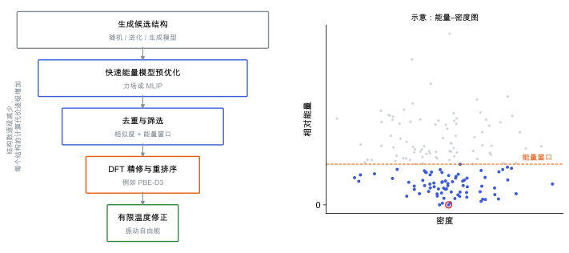

晶体结构预测：搜索与排序
随机或准随机搜索、分层排序与能量模型的选择：CSP 流程中每一步解决什么、引入什么误差。
完整推导还需要
只是提示，不需要先读完才能往下看。
直觉直观解释
晶体结构预测 (crystal structure prediction, CSP) 要回答：只给定分子（或化学组成），能不能算出它会结晶成什么结构。它可以拆成两个独立的问题 [Price 2014]：
- 搜索：在能量景观上找到所有低能极小（见 能量景观与多晶型）。漏掉了实验结构，后面再准也没用。
- 排序：把找到的极小按稳定性排对。能量模型的误差如果大于结构之间的能量差，排序就不可信。
两者的代价矛盾：搜索要产生成千上万个候选，只能用便宜的能量模型；排序要精确，只能对少数候选用贵的方法。所以实际流程是一个漏斗：每一层用更准、更贵的方法，只把上一层能量窗口内的候选送下去。

| 符号 | 是什么 | 图里对应 |
|---|---|---|
| 漏斗各层 | 生成 → 预优化 → 去重筛选 → DFT 精修 → 自由能修正 | 左图从上到下 |
| \Delta E | 相对最低能结构的能量 | 右图纵轴 |
| \rho | 晶体密度 | 右图横轴 |
| 能量窗口 | 保留进入下一层的能量范围 | 右图橙色虚线以下 |
定义与公式数学与推导
常见搜索策略
- 随机搜索 (random structure searching)：随机生成合理的结构后局部优化，重复很多次。AIRSS 是代表；它的思路是用约束（最小原子间距、对称性）让随机结构更合理 [Pickard & Needs 2011]。
- 进化算法 (evolutionary algorithm)：把低能结构当作“父代”，通过交叉和变异产生新结构，保留更低能的后代。USPEX 是代表 [Oganov & Glass 2006]。
- 粒子群优化 (particle swarm optimization)：每个结构根据自身和群体找到的最好结构调整，CALYPSO 是代表 [Wang et al. 2010]。
- 准随机采样：分子晶体中常用低差异序列（如 Sobol 序列）在空间群和分子取向上均匀采样，再优化。
搜索算法必须和 晶体结构相似度与去重 配合：同一个极小会被找到很多次，需要去重，否则能量窗口会被重复结构占满。
盲测
剑桥晶体数据中心组织的CSP 盲测 (blind test) 让各组在不知道实验结构的情况下提交预测，再与实验对比。第六次盲测的报告显示：搜索已经能常规地找到实验结构，主要难点在排序，以及柔性分子和多组分体系 [Reilly et al. 2016]。
在本研究线里的样子对应与边界
- CSPpipeline 的结构：生成候选 → MACE 预优化 → 去重 → VASP PBE-D3 精修 → 必要时声子与自由能。每一层都对应上图的漏斗一层（见 计算方法由哪些层次组成）。
- MACE 预优化的风险：如果 MLIP 对氢键或分子间距离有系统误差，实验结构可能被优化到错误的极小，或者能量偏高被窗口过滤。用已知多晶型（如 α、β、γ-甘氨酸）检查它们是否进入窗口，是验证这一层的直接方法（见 通用机器学习势的微调）。
- 能量窗口取多宽：取决于下一层方法的预期重排序幅度。可以用一组已知结构，比较 MACE 与 DFT 的排序差异来估计。
- 排序误差的来源：泛函与色散（见 色散校正）、计算参数（见 收敛测试）、温度效应（见 自由能与熵），总结见 预测的误差来自哪里 [Beran 2016]。
常见坑对应与边界
- 搜索不完备却没察觉：搜索次数不够时，新找到的低能结构还在不断出现。可以监控最低几个结构是否被重复找到，作为收敛的粗略指标。
- 空间群或 Z' 范围太窄：实验结构在 Z' = 2 或少见空间群里，就永远找不到。
- 去重阈值不合适：太松会把不同结构合并，太紧会留下大量重复（见 晶体结构相似度与去重）。
- 只报全局极小：实验结构常常在前几名而不是第一名，应报告能量窗口内的结构集合。
- 不同层的能量参考不一致：比如分子构象能在力场中没有正确计算，换到 DFT 后排序剧变。
检验自己对应与边界
参考资料
论文Price 2014
S. L. Price, Predicting crystal structures of organic compounds, Chem. Soc. Rev. 43, 2098 (2014)
尚未实际查阅，目前只是拟查阅书目
基准研究Reilly et al. 2016
尚未实际查阅，目前只是拟查阅书目
论文Pickard & Needs 2011
尚未实际查阅，目前只是拟查阅书目
论文Oganov & Glass 2006
尚未实际查阅，目前只是拟查阅书目
论文Wang et al. 2010
尚未实际查阅，目前只是拟查阅书目
论文Hoja et al. 2019
尚未实际查阅，目前只是拟查阅书目
论文Beran 2016
尚未实际查阅，目前只是拟查阅书目
分类统计力学与采样 · 方法 · 研究线：结构预测与能量景观 · 状态：草稿